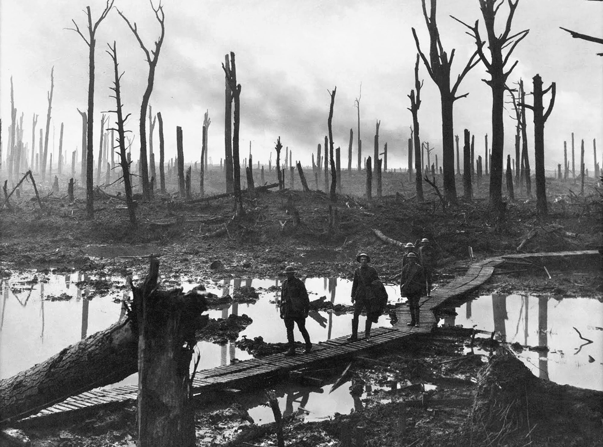
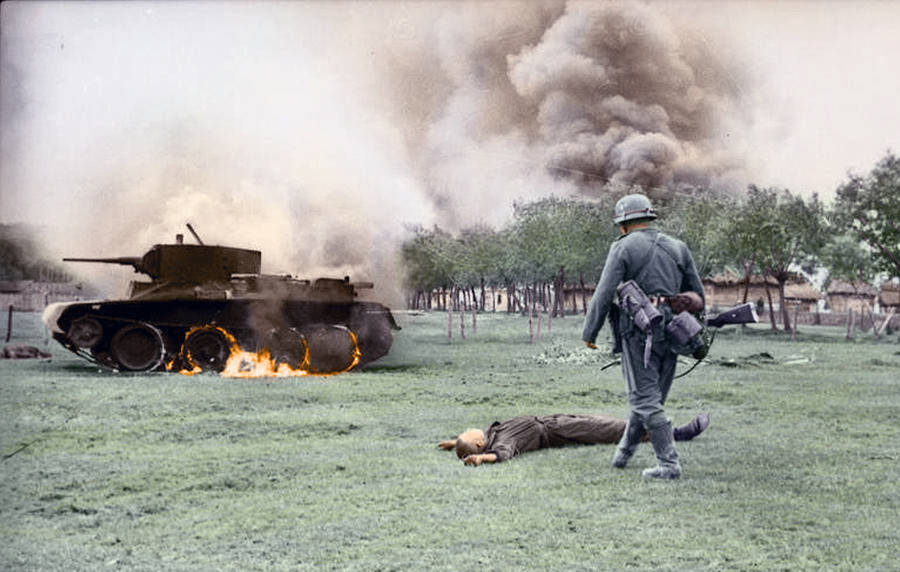

After its defeat in the Spanish-American War of 1898, Spain ceded its longstanding colony of the Philippines to the United States in the Treaty of Paris. On February 4, 1899, just two days before the U.S. Senate ratified the treaty, fighting broke out between American forces and Filipino nationalists led by Emilio Aguinaldo who sought independence rather than a change in colonial rulers. The ensuing Philippine-American War lasted three years and resulted in the death of over 4,200 American and over 20,000 Filipino combatants. As many as 200,000 Filipino civilians died from violence, famine, and disease.

World War I, also known as the Great War, started in 1914 after the assassination of Archduke Franz Ferdinand of Austria. His murder catapulted into a war across Europe that lasted until 1918. During the four-year conflict, Germany, Austria-Hungary, Bulgaria and the Ottoman Empire (the Central Powers) fought against Great Britain, France, Russia, Italy, Romania, Canada, Japan and the United States (the Allied Powers). Thanks to new military technologies and the horrors of trench warfare, World War I saw unprecedented levels of carnage and destruction. By the time the war was over and the Allied Powers had won, more than 16 million people—soldiers and civilians alike—were dead.

World War II, the largest and deadliest conflict in human history, involved more than 50 nations and was fought on land, sea and air in nearly every part of the world. Also known as the Second World War, it was caused in part by the economic crisis of the Great Depression and by political tensions left unresolved following the end of World War I.